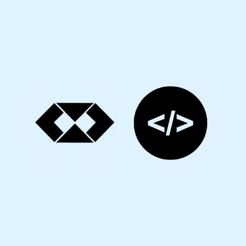

Quiz de Perfil Profissional!
Este quiz foi cuidadosamente elaborado para ajudá-lo a identificar e alinhar seu perfil profissional com quatro tipos distintos: Analista, Executor, Comunicador e Planejador.
Descubra qual perfil melhor representa suas habilidades, preferências e estilo de trabalho. Vamos começar!